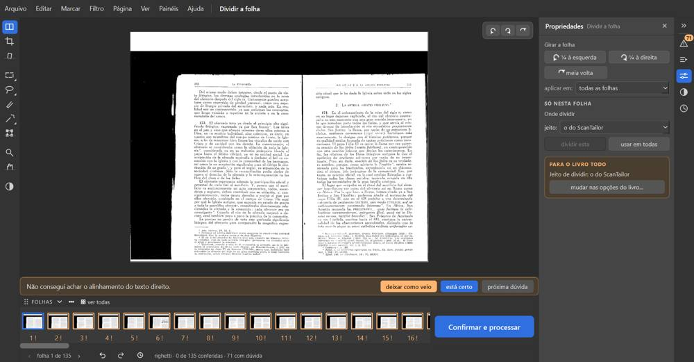
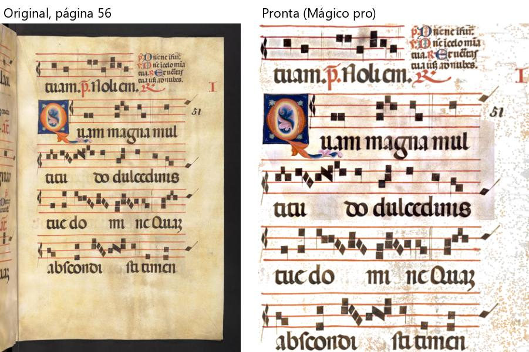
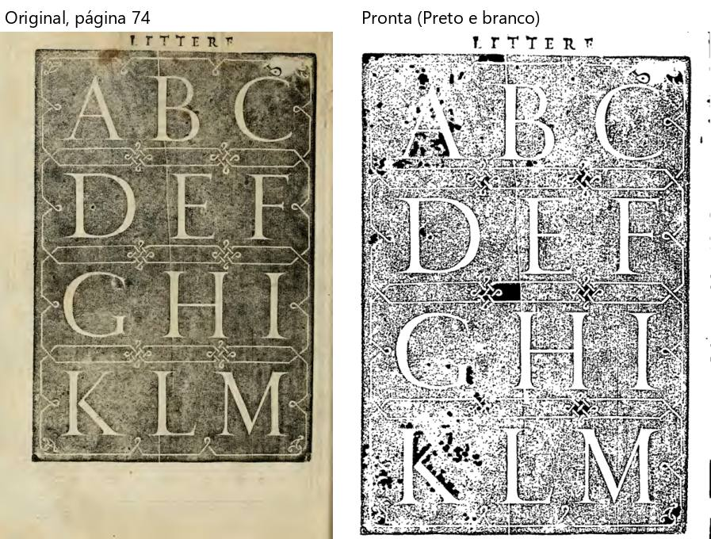
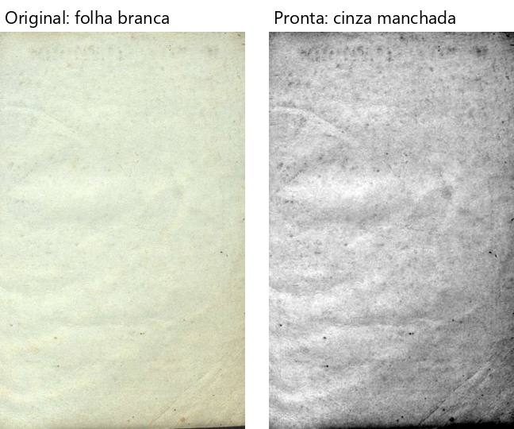
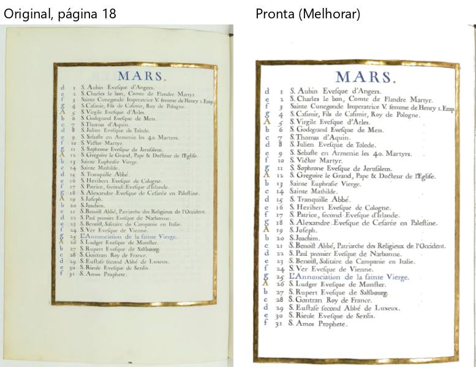
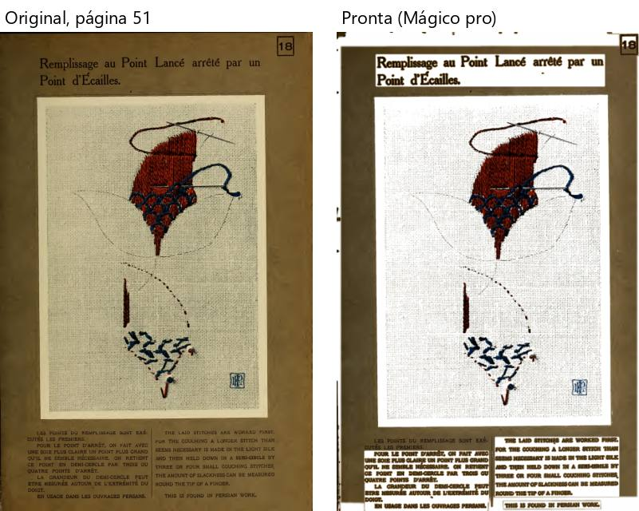
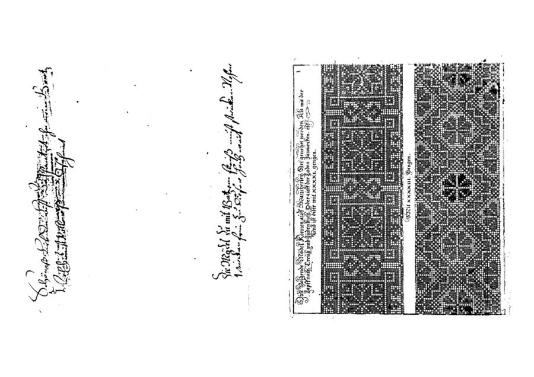

Pedido do Samuel: "pegar os livros de testes e ir testando um por um, passando dentro do programa realmente".
Feito pelo verificador com a janela de verdade (fase-1 em 1ba93cf), fora da tela do Samuel, com uma pasta de
dados própria e uma cópia nova de cada PDF. Em cada livro, o caminho inteiro do Kaique: abrir pelo "Abrir um PDF" →
escolher as caixinhas que fazem sentido para aquele livro → conferir (Dividir, Cortar, Endireitar, filtros, Retângulo
quando há gravura, painel "Para revisar", botões laranja da faixa, "está certo", arrastar, desfazer) → "Confirmar e
processar" → abrir o PDF pronto e olhar páginas → "montar para imprimir em A4" (sem imprimir). Nenhuma linha do programa
mudou; nada foi consertado.
| Livro | Folhas usadas | Filtro | Foi até o fim? | Processar | PDF pronto | Problemas |
|---|---|---|---|---|---|---|
| Boécio | 50 (todas) | Preto e branco | sim | 42 s | 4,6 MB | 6 |
| Palatino | 134 (todas) | Preto e branco | sim | 3 min 31 s | 24 MB | 4 |
| Righetti | 135 (todas) | Preto e branco | sim, mas não dividiu (trava) | 4 min 16 s | 22 MB | 8 |
| Siebmacher | 134 (todas) | Preto e branco | sim | 3 min 39 s | 7 MB | 5 |
| Pesel | 92 (todas) | Mágico pro | sim | 6 min 50 s | 208 MB | 5 |
| Matemática | 144 (todas) | Preto e branco | sim | 5 min 58 s | 9 MB | 4 |
| ljs47 | 113 (todas) | Mágico pro | processou; montar não feito (*) | 18 min | 707 MB | 4 |
| Valadés | 446 (todas) | Preto e branco | sim | 13 min 47 s | 47 MB | 4 |
| Escola de Jesus | 199 (todas) | Mágico pro | sim | 11 min 7 s | 907 MB | 4 |
| Cursus | 402 (todas) | Preto e branco | sim | 17 min | 113 MB | 2 |
| Marial | 1 a 200 de 907 | Preto e branco | sim | 5 min 38 s | 21 MB | 3 |
| Livro de Horas | 1 a 100 de 191 | Melhorar | sim | 20 min 27 s | 1.186 MB | 5 |
| Graduale | 200 a 300 de 750 | Mágico pro | sim | 19 min 30 s | 1.040 MB | 4 |
| Antiphon_25 | 1 a 120 de 305 | Mágico pro | sim | 33 min 29 s | 1.590 MB | 6 |
14 livros passaram pelo caminho inteiro; 13 chegaram ao fim, com o PDF pronto e os cadernos montados. O Righetti foi até o fim mas o livro saiu sem dividir (problema 1). (*) No ljs47 a janela de teste apareceu minimizada durante o processar (não sei por quê, talvez um Windows+D no PC; não parece do programa) e o meu roteiro parou antes de montar; o PDF saiu completo. Os quatro livros grandes foram feitos num trecho, como o pedido permitia. Em todos, nenhuma página faltou nem repetiu (contagem de entrada = contagem de saída) e o programa nunca fechou nem travou.
Contagem por tipo (linhas das tabelas dos 14 livros): 64 — 41 erro, 22 confuso, 1 falta. Muitas linhas são o mesmo defeito em livros diferentes; juntando, são 18 problemas distintos, abaixo do mais grave ao menos grave.
1. Livro escaneado de lado não divide (Righetti R-1 a R-4; erro + falta). A tela das caixinhas não tem como girar o livro; o "Conferir" não divide as folhas de lado (a frase prometia "135 folhas em 270 páginas", saíram 135); girando depois na conferência, "dividir esta" fica cinza; voltar às opções e "Conferir" de novo também não divide. Não achei caminho na janela.

2. O desfazer não tira a marcação do Retângulo — e ela vai para o PDF (11 livros: P-2, R-6, S-5, PE-5, L-5, V-5, E-4, MA-3, H-6, G-4, A-1; erro). Em todos os livros em que marquei, as áreas foram N → N+1 → N+1 depois do desfazer, sem aviso. No Antiphon a marca que ficou saiu no PDF como um retângulo cinza atrás do texto; no Palatino 74, um bloco preto no mesmo lugar.

3. PDF pronto gigante com Mágico pro e Melhorar (Pesel, ljs47, Escola, Horas, Graduale, Antiphon; erro). 208 MB, 707 MB, 907 MB, 1.186 MB (100 páginas), 1.040 MB (101 páginas), 1.590 MB (120 páginas) — de 15 a 20 vezes o original. No Preto e branco ficam leves.
4. Avisos escondidos e números que não batem (E-1, H-5, C-2, R-7 e outros; erro/confuso). O rodapé e o painel "Para
revisar" não mostram os avisos de folha ("Alinhamento duvidoso"): na Escola o rodapé dizia "1 com dúvida", o
painel 2, e no fim a janela "Antes de processar" cobrou 166 páginas. É a explicação do ponto 9 do mapa (o número do
alto conta os avisos de folha; o rodapé e o painel, não).
5. Gravura estragada no Preto e branco, mesmo com "Achar gravuras" ligada (Palatino 74, Valadés 41, Siebmacher 110; erro). O fundo escuro da gravura em madeira virou chuvisco com manchas pretas; o traço fino da gravura em metal virou áreas pretas chapadas.

6. Texto comido (Matemática 66 e 40, Cursus 3; erro). O sombreado atrás dos números das questões virou borrão
preto; o começo das linhas perto da lombada sumiu; o corte comeu a primeira letra das linhas. 
7. Folha branca sai cinza e manchada no Preto e branco (Boécio 49, Marial 2, Siebmacher 74 e 86; erro). A textura e as rugas do papel viram desenho; na Siebmacher, com faixa preta grossa da lombada.

8. "usar o corte alargado" deixou a página menor (Antiphon 2; erro). A guarda virou uma tira estreita.

9. Corte errado (Horas 18; erro). Tirou o lado esquerdo da moldura dourada e deixou sobra do outro lado.

10. O botão "usar mais fraco" não faz nada, e o aviso fala de "força do preto" em página Mágico pro/Melhorar (E-2, H-3, PE-4; erro/confuso). O aviso "Ficou muito escura" fica, só o botão some; aparece em quase toda página iluminada.
11. O desfazer não traz o aviso de volta (Boécio B-1 no Endireitar, Pesel PE-3 no "usar mais escuro"; erro). A página volta, a dúvida some da lista.
12. Pranchas do Pesel com retângulos brancos por cima do cartão (PE-1; erro).

13. Avisos demais e avisos falsos (B-5, P-4, S-4, M-3, R-8, V-4, A-6; confuso). "A conta do ScanTailor e a do Editor acharam inclinações diferentes" em folhas sem texto (capas, guardas) e em metade das folhas de alguns livros; "Esta página tem cor" em 72 páginas de papel marrom (Siebmacher) e em quase todo o livro de fotos de celular (Matemática); de 126 a 201 páginas com dúvida. Com tanto aviso, os defeitos reais (5, 6, 7) passam sem aviso nenhum.
14. O número de dúvidas muda sozinho ao folhear (B-3, L-4, MA-2, G-5, A-6; confuso). Sem resolver nada: 17 → 15, 44 → 57, 47 → 57, 19 → 30, 66 → 75.
15. O desfazer desfaz o que o Kaique não está vendo (Righetti R-5; confuso). Arrastar a linha numa folha que não divide não faz nada; o desfazer seguinte desfez o giro das 135 folhas, e o PDF saiu todo de lado.
16. Montar em A4 um livro deitado vira as páginas de lado, com mais de 120 linhas iguais de aviso (Siebmacher S-3; confuso).

17. Corte "até o que está impresso" deixa cada página de um tamanho, sem margem (ljs47 L-3, Graduale G-3; confuso). A letra muda de tamanho de página para página no A4.
18. Pequenos (erro/confuso): nome do PDF sugerido com acento ("mágico pro"; A-4; CLAUDE.md §3); risco preto na
beirada (B-6); mancha pequena vira ponto preto (V-2); pontinhos laranja na margem (A-5); um aviso a mais depois de
desfazer (B-4); "Preparando a prévia..." demorado no livro de fotos (M-4); no Palatino, o retângulo marcado some dentro
do salmão e só o número muda (P-3).
O clique do Windows em "Confirmar e processar" não abriu nada em 30 s em todos os 14 livros, com o botão à vista, ligado e sem nada por cima; o clique pelo próprio Qt no mesmo botão abriu na hora. Num percurso curto (abrir, conferir e clicar logo) o mesmo clique do Windows funcionou, três vezes. Pode ser do meu jeito de pilotar a janela, ou o botão "não pega" depois de muito uso da tela. Vale o Samuel reparar se o botão às vezes precisa de um segundo clique.
O mapa (ponto 22) diz que o processar não tem tempo estimado. Tem: depois das primeiras páginas a tela mostra "Página 110 de 120 - faltam cerca de 3 minutos". Por isso não contei o tempo como problema; os tempos estão em cada livro (velocidade é da Fase 5).
Mancha do verso escurecida no Preto e branco (CLAUDE.md §9; muito forte no Cursus 37); Boécio de resolução baixa
(§9); texto repetido do site no pé de todas as páginas da Escola (R8, ainda não existe); três números de dúvidas (ponto 9
do mapa — o item 4 acima explica de onde vem).
Nenhum livro fechou o programa; contagem de páginas sempre certa; cadernos montados com instruções de dobra certas; papel branco e texto limpo no Preto e branco em Palatino, Valadés, Marial, Cursus (fora da mancha do verso); cores fiéis e papel branco no Livro de Horas, Graduale, Antiphon, ljs47 e Escola (R6); fundo preto, página vizinha e sombra da lombada tirados; "Deixar em branco" e os botões de corte funcionando.
<livro>.md), com uma tabela por problema e os prints.prints/<livro>/. Prints inteiros, o registro de cada clique (log.txt), os PDFs prontos
e os arquivos para imprimir (fora do git): D:\programas\EditorImpressao-arquivos\testes-livros-saida\<livro>\.roteiros/percurso.py (o caminho inteiro), roteiros/configs/ (as caixinhas de cada livro),
roteiros/contorno_righetti.py, roteiros/base.py (agora com todas as janelas sempre fora da tela).ONDE-PAREI.md); corrigido no roteiro e testado.Editor de Impressão · gerado em 23/10/2026 às 23:40